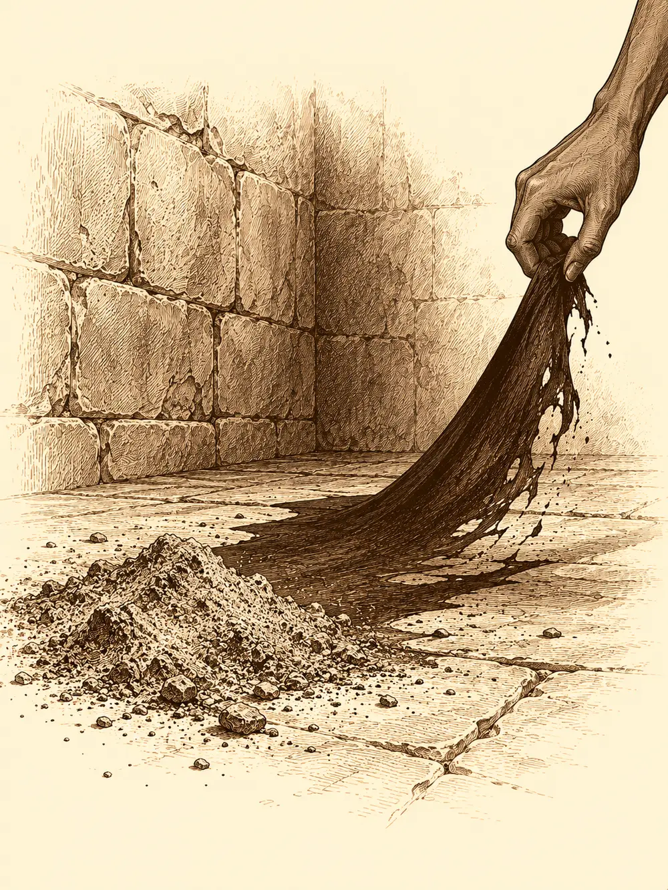

Capítulo 138
Intento de asesinato
Libro IX · Mareas y muertos
El primer piso del castillo ya no se parecía al que conocían. Donde antes había un salón de paso ahora se alzaba una gran mesa con el mapa de Kuroto, con el sur cubierto de fichas y banderines, y a un lado se alineaban los escritorios de los cónsules, que por fin podían trabajar sentados. Unas escaleras nuevas subían hacia pisos que antes no existían. Junto al trono, Gelbreak montaba guardia tieso como un samurái de madera, con cara de aburrimiento infinito, y al ver entrar a los cazadores les dedicó media sonrisa. Mei servía el té a Calista.
Llegaban del sur. La última oleada había obligado a bajar a Jin y a Kazuki; Jin venía a buscar a Ayuko para preparar la siguiente, y Kazuki había pasado la batalla al frente de los arqueros, calmándoles el pulso y corrigiéndoles el tiro. Serafina, la capitana de largas orejas de liebre, había repartido bastonazos a un demonio con cabeza de toro y ahora sostenía una botella. Maroxi había faltado a la batalla. Calista, por su parte, llevaba días entre papeles, ayudas al frente y consejos de guerra, intentando aprender a gobernar y averiguar dónde había nacido la crisis.
"Os he llamado porque quiero cerrar el asunto de la coronación", dijo. "He encontrado máscaras y togas de los cultistas en la habitación de una de las sirvientas y, de paso, a varias ladronas. Quiero erradicarlas hoy".
Serafina preguntó si erradicar significaba lo que solía significar.
"Significa detener los peligros que hay en este palacio", respondió Calista. "Tenemos al hombre que capturamos en la ceremonia y aún no he tenido tiempo de interrogarlo".
Maroxi le preguntó si de verdad pensaba bajar ella a las celdas, teniendo un país que gobernar y a un guardián que podía llevarlos. Calista contestó que también aquello era asunto de Estado. Él sacó entonces la oleada a la que no había acudido: nadie le había dado orden, dijo, y tras las quejas de que los cazadores iban por libre no había querido crear problemas. Gelbreak le recordó que las almenaras bastaban para avisar a toda la isla. Calista extendió la mano pidiendo silencio.
"Si el problema es que no has recibido órdenes, te las doy yo. Cuando veas las almenaras encenderse, acudirás al campamento principal del sur a esperar órdenes de Banzo o de los generales".
La discusión no terminó ahí. Hubo más preguntas, más excusas, más reproches, y Maroxi acabó diciendo que parecía el único que pensaba en aquella sala. Se oyó un ruido sordo, como un motor lejano. Era Gelbreak gruñendo. El drow sacó el estoque y le apoyó la punta bajo la barbilla.
"Eres cazador. Acudes a la shogun, aceptas la misión y te callas".
"No he venido aquí a que me insulten".
Maroxi se arrancó el collar de los cazadores y se lo tiró. Empezó a desvanecerse en el aire; alguien intentó deshacerle el conjuro, y él deshizo el intento antes de que lo alcanzara. Cuando terminó de desaparecer, solo quedaba el collar en el suelo. Calista hizo unas señas rápidas a su guardián.
"Lo solucionaré en otro momento. Sigamos".
En las celdas, la primera prisionera que vieron fue Danifae, encadenada de pies y manos, con una mordaza en la boca y los ojos riéndose por encima de ella. Calista les explicó que había ido a palacio ofreciendo información sobre los cultistas y que, en la misma conversación, había dejado claro que habría podido matarla. Podían interrogarla si querían, bajo su responsabilidad; era una maestra de la manipulación. Decidieron empezar por el otro.
Calista le entregó a Kazuki el vial que había rescatado Mei, para que lo estudiara. Luego se enfrentaron al falso guardia. Jin le recordó contra qué había luchado, Serafina se ofreció a pegarle, y el hombre no se inmutó. Fue Kazuki quien se le acercó con los ojos encendidos y una voz que no parecía la suya, y algo en la cara del preso se vino abajo. Agachó la cabeza.
"¿Cuántos os habéis infiltrado en el palacio?", preguntó Calista.
"Tres".
"¿Y por qué matarme a mí?".
"Si desestabilizamos el shogunato, no tendréis ejército. Ya teníamos a Rua, pero lo echasteis todo a perder. Ahora sois vosotros el objetivo". Sonrió de medio lado. "Veneno, traiciones en tu palacio. Sirvientas, guardias, cualquiera puede ser uno de nosotros. Yo me reuniré con Otakemaru. Él me sanará y me convertirá en un ser superior".
"Te comerá el alma, como a todos", dijo Jin.
"Eso es lo que quiero".
Calista lo miró como se mira a un insecto en el borde del plato.
"Ahora tenemos tres. Eliminamos a estos tres y bastará con poner controles para que no entre cualquiera".
"A ver si lo conseguís", dijo el cultista. "O nos veremos en el otro lado, shogun".
Calista miró de reojo a Gelbreak. Del drow salió un haz de luz verde que atravesó al prisionero, y donde había un hombre arrodillado quedó un puñado de polvo gris. Ella le pidió que aprovechara lo que quedaba. Gelbreak se agachó, tiró de la sombra del muerto como quien arranca una tela pegada al suelo y se la llevó al pecho. Durante un momento tuvo la cara y el cuerpo del cultista. Cerró los ojos, rebuscando en una memoria ajena.
"Usaron una flor", dijo al volver a su forma. "Y la receta del veneno salió de la biblioteca del shogunato".
Subieron a la biblioteca. Kazuki encontró entre los volúmenes de venenos uno al que le faltaba una página, arrancada de cuajo, y se fue derecho al índice para saber qué contenía: allí figuraba el título de la pócima, pero ni ingredientes ni preparación. Calista, que venía del mar y entendía de plantas, aunque sobre todo de las que crecían bajo el agua, buscó en los tratados de botánica y encontró una flor que crecía en el sur de Kuroto y que llamaban flor de medianoche. En poca cantidad causaba parálisis; si se tomaba mucha, mataba. El libro añadía que era casi imposible acabar con ella, que aguantaba casi cualquier condición. Allí donde la influencia de los demonios arruinaba otros cultivos, ella podía seguir creciendo. No tenían la receta completa ni sabían cómo se había mezclado el contenido del vial, pero ya tenían un nombre.
Serafina, mientras tanto, se había fijado en las manos de Mei cuando la muchacha subió con el té: estaban llenas de cortes. Se lo dijo a Calista, y Calista se lo preguntó a Mei sin rodeos. La sirvienta enrojeció. Por las noches había estado limpiando las cocinas, porque otras dejaban el trabajo a medias, y se había cortado fregando. Calista no bebió el té, por si acaso. Desde la cena no comía nada que no le hubiera preparado Mei, ni dormía si Gelbreak no velaba.
Bajó y mandó reunir a todo el servicio. Les dijo que le gustaba que el palacio estuviera limpio, pero que no quería que nadie trabajara de más porque otras no cumplieran, y cuando las sirvientas desviaron la mirada hacia Mei, les recordó a quién debían mirar. Luego, con un mensaje que solo oyó Mei, le preguntó cuál de ellas era la dueña de la cama. Mei dio un paso al frente y señaló a una.
Calista le pidió que le enseñara los brazos. Había pequeños pinchazos en la piel, y la mujer, temblando, culpó a Mei: era amiga de Rua, dijo, ella había encontrado el veneno. Calista le pidió que demostrara que no llevaba ningún símbolo en el cuerpo, y la sirvienta se desnudó allí mismo; Gelbreak se cegó a sí mismo con un conjuro para no mirar y se dio contra una columna antes de recuperar la vista. Después, a una señal de Calista, entró en la habitación y volvió con las togas que había encontrado bajo el colchón. La mujer cayó de rodillas.
"Mi familia", dijo entre lágrimas. "Aparecieron en casa de mi familia. Me dijeron que los matarían a todos si no abría las ventanas para que entrara esa criatura que la atacó antes de la coronación. Y me obligaron a guardar esa ropa, para que me culparan a mí".

Calista la estudió mucho rato. Las lágrimas eran de verdad, y el miedo también. La despidió y mandó a los guardias que la sacaran del palacio con vida.
Luego se volvió hacia las demás. Sabía que alguna había robado, y dos empezaron a temblar. Una confesó que habían cogido joyas de Rua porque pensaban que, después de su traición, nadie las querría.
"Que fuera una traidora no hace que dejen de ser bienes del shogunato", dijo Calista. "Las devolveréis. Y trabajaréis en las caballerizas hasta nuevo aviso. No soy cruel, pero soy justa".
Serafina, que se había ofrecido a registrar los dormitorios, encontró más anillos y collares escondidos entre los colchones. Echó un vistazo a la puerta, se los guardó en el bolsillo y le dio las gracias al cielo, porque no tenía un céntimo. Jin solo encontró ropa corriente.
Kazuki interrogó a los cónsules, que tenían demasiado papeleo para vigilar a nadie, y pidió a un guardia que vigilara a sus compañeros. También le propuso a Calista investigar disfrazado de guardia, y ella le dio permiso. Gelbreak lo cogió aparte.
"¿Has comprobado que ese guardia no es precisamente el enemigo? La sirvienta tampoco olía a esa magia, y era una de ellos a la fuerza. Antes de contar nada, asegúrate de en quién confías".
Jin bajó a las cocinas. Entre las hierbas del té encontró unos pétalos sueltos, tirados en el fondo de un cajón, que no supo reconocer. La cocinera se acordó de un hombre al que habían contratado para el banquete y que no había vuelto: pelo oscuro, ojos marrones, creía que se llamaba Pedro. La mitad de Kuroto respondía a esa descripción.
En la mesa de guerra, Calista se sentó con Yasuoka y Ayuko a estudiar las defensas para la próxima oleada: vallas, refuerzos, posiciones en el flanco. Ella señalaba lugares, ellos la corregían, y ella aceptaba las correcciones. Entre todos pensaron que vendría bien que la niña cazadora que sabía abrir la tierra, Arwen, excavara zanjas. Kazuki, desde un rincón, decidió escuchar las mentes de la sala con un gesto de los dedos que los nobles vieron sin entender. Yasuoka y Ayuko se preguntaban qué estaba haciendo aquel hombre. Los cónsules sumaban gastos y se equivocaban en una cuenta. Un guardia quería volver a casa con su mujer y otro rezaba para que le cambiaran pronto el turno. Ningún otro infiltrado.
Y entonces llegó Hanae, abanicándose, y en la mente de Calista estalló una tormenta de imágenes tan violentas que Kazuki retrocedió dentro de sí mismo.
"¿Y el peine que le regalé, shogun? No se lo veo".
"Está guardado con el resto de mis tesoros. Traer un peine a una mesa militar sería extraño, ¿no cree?".
La noble se excusó, se levantó y fue derecha hacia Gelbreak, al que entregó una nota. Calista, contra toda su lógica, se levantó tras ella. Al acercarse percibió un olor raro en la noble, intenso, como de flores recién cortadas que se hubieran llevado encima mucho rato. Le pidió con signos a Gelbreak que no le quitara ojo y, con la sonrisa más falsa que tenía, invitó a Hanae a pasear por el jardín. Gelbreak avisó a los cazadores para que las siguieran sin hacer ruido.
Junto al pequeño lago, Calista elogió aquel perfume tan embriagador. Hanae se olió la manga, abrió un poco los ojos y explicó que había pasado la mañana recogiendo flores con sus propias manos para un regalo especial. No quiso decir para quién. Se ofreció a enseñarle dónde crecían, para que fueran juntas. A unos pasos, cuatro cazadores fingían contemplar los arbustos. Gelbreak se unió al paseo y, cuando Calista lo miró, le contó con los dedos que la nota traía flores dentro y que olían fatal. Ella le pidió que las dejara caer para verlas.
Eran otras. No se parecían en nada a la flor de medianoche.
Calista le pidió con signos que la sacara de allí, y el drow anunció que la shogun tenía una reunión. Hanae se despidió con una reverencia a ella y otra, un poco más profunda, al guardián. En cuanto se fue, Calista empezó a susurrar que la próxima vez que no hubiera guardias delante la desintegrara como al cultista, que aquella mujer era peor que cualquier seguidor de Otakemaru, peor que todas las alimañas de la tierra y del mar. Gelbreak la llevó detrás de un seto y la calló con un beso. Ella se quedó quieta un par de segundos, como si tuviera que volver a encontrar el hilo. Él le tendió la nota.
¿Te apetece venir a mi casa esta noche a las nueve?
"No vas a ir tú", dijo Calista. "Voy a ir yo. Con tu cara".
"No. A esa la mato yo".
"¿Y por qué quieres matarla tú ahora?".
"Porque me está estropeando los planes de esta noche".
Se miraron.
"La matamos entre los dos", dijo él.
"Sí, pero no hables tan alto".
Respiró, recuperó la compostura y volvió a ser la shogun. Esa noche ya se vería. Ahora tenían que encontrar al cultista que faltaba.
De vuelta al salón del trono, Jin les contó lo del empleado desaparecido y los pétalos de la cocina, y Gelbreak bajó a revisarla. Calista se sentó y trató de poner orden. Tres infiltrados, había dicho el preso. Uno era él. Otra, la criatura del pelo con bocas. ¿Y el tercero? ¿El tal Pedro? No lo sabía, y el número podía ser mentira. Gelbreak volvió y le apoyó una mano en el hombro. Kazuki hizo una reverencia muy marcada y salió a seguir con su encargo, y Jin se fue a buscar a los estrategas, aunque Calista le sugirió que pasara antes a ver a Shizuka, que se ponía nerviosa cuando nadie le hacía caso.
En los días siguientes, Calista cruzó censos, registros y recomendaciones hasta reducir a cuatro las candidatas a ocupar el servicio que había despedido. Una se llamaba Himari, venía de Kujiro, había servido en una casa noble y había perdido a su familia en la primera oleada. Las otras eran Miyuki, Kaori y Yumi. Las mandó a asearse y se disfrazó de sirvienta para observarlas sin que supieran quién era. No encontró las marcas que buscaba. En Yumi vio moratones de castigos antiguos. Miyuki y Yumi hablaban de discreción, Himari callaba con prudencia, y Kaori se puso a repetir lo que un guardia contaba en las tabernas sobre lo que hacían a solas la shogun y su guardián.
Calista volvió al despacho temblando de rabia y le encargó a Gelbreak encontrar al guardia que hablaba. Que lo castigara como soldado y, después, que lo matara sin testigos ni pruebas, para que el resto aprendiera a callar. Él aceptó. Luego regresó ante las candidatas con su propia cara, contrató a Himari, a Miyuki y a Yumi y echó a Kaori por chismosa.
Por esos días Banzo se presentó en palacio a interceder por Guxi. Elogió su compromiso y prometió compartir las consecuencias si volvía a fallar. Calista le recordó una misión de espionaje que el artífice no había cumplido, pero acabó entregando un contrato: Guxi colaboraría con los cazadores, aunque sin título ni privilegios hasta que demostrara su valor con un invento, una misión, un rescate o una hazaña. El goliat le dio un abrazo que la levantó del suelo y se marchó con el papel. En otro rincón de la capital, en el sótano de Víctor, Archi se metió dentro de su prototipo de armadura después de que reventara otro maniquí, pidió que cuidaran de su perro si algo salía mal y la activó. Las placas se cerraron sobre él sin romperle nada. Golpeó la coraza con una maza y no dejó ni una abolladura.
Cuando Banzo se hubo ido, Calista miró a su guardián.
"Ve al cuartel. Quiero saber quién más habla de más".
Gelbreak le dio un beso y salió.